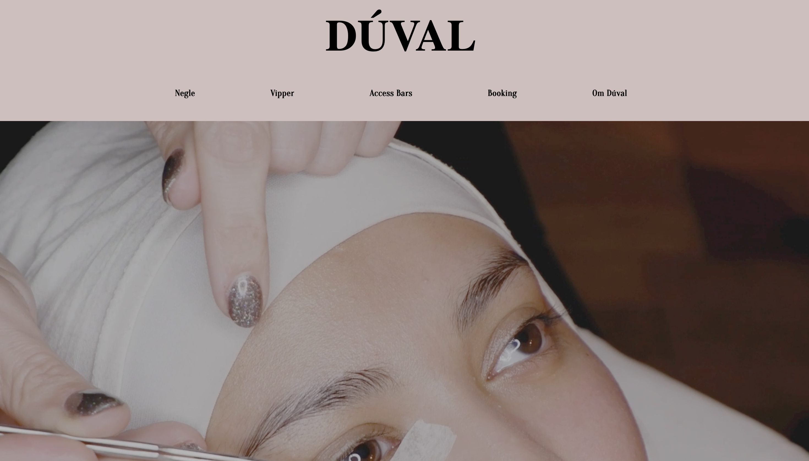
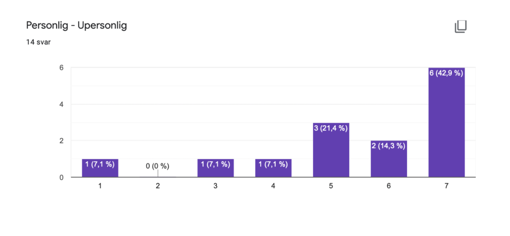
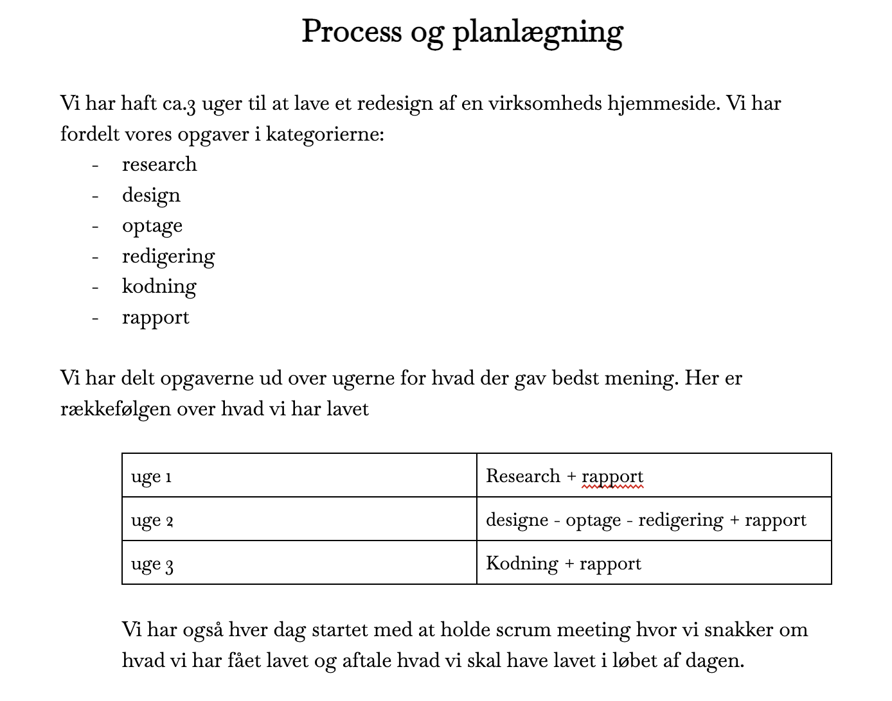
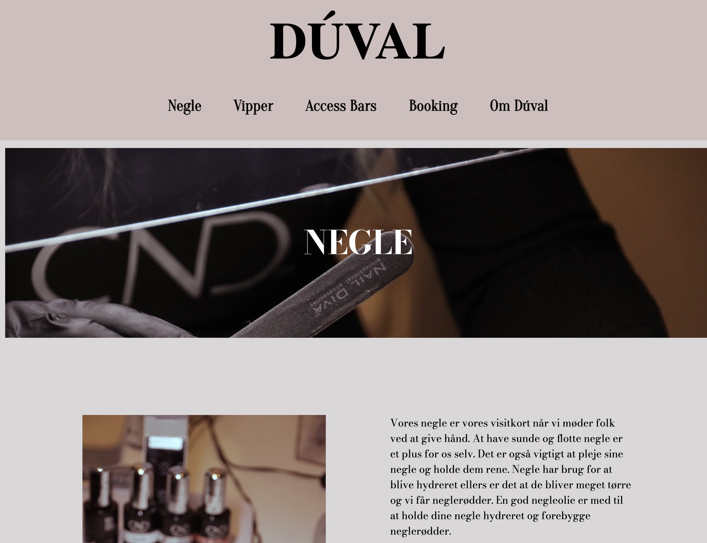
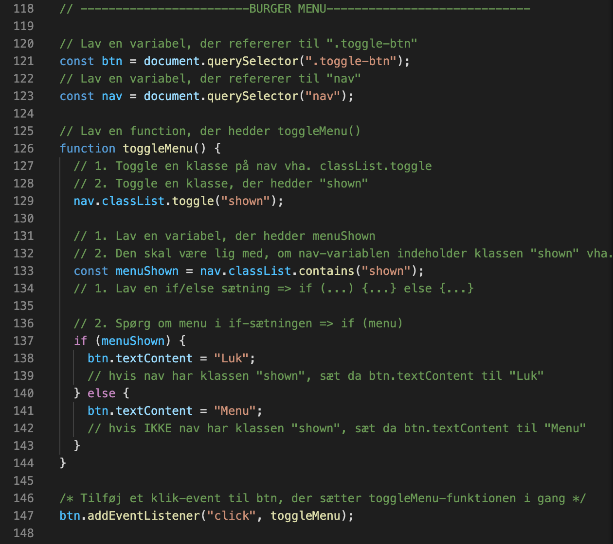
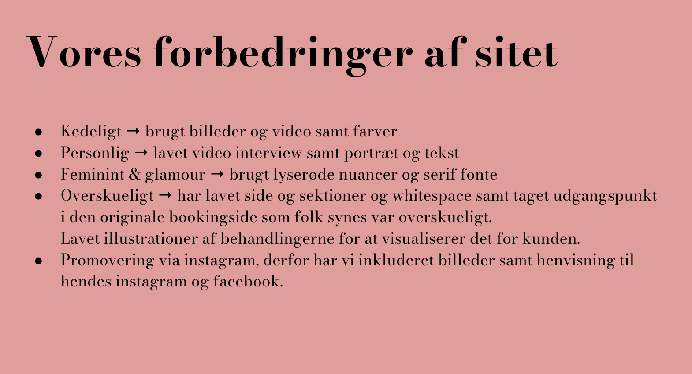
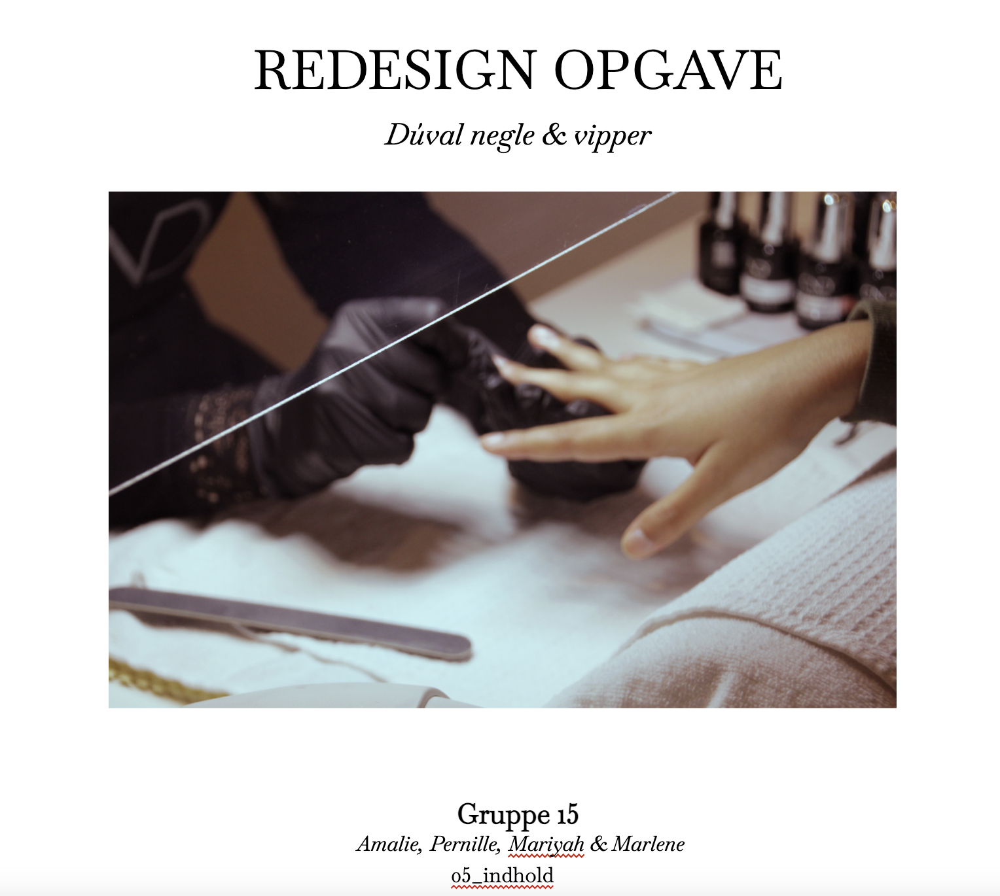
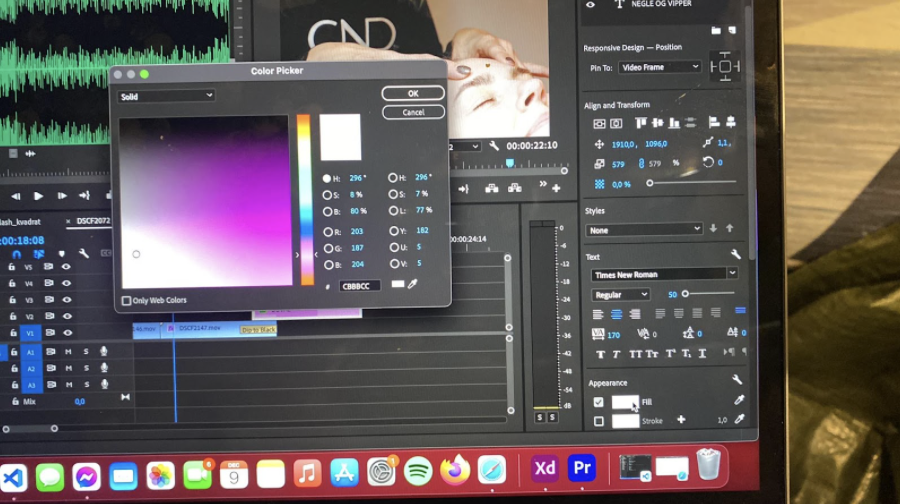
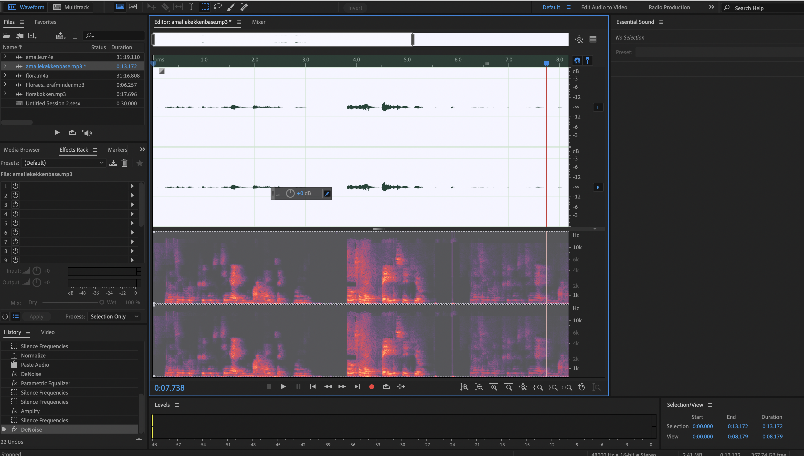

Tema 05-indhold har givet mig en grundlæggende indførsel i videoproduktion, herunder forarbejdet inden selve optagelse, selve optagelsen, samt postproduktion. Jeg ahr fået kendskab til skolens kameraer til optagelse af video og ekstern lyd og Premiere Pro og Audition til redigering. Dette er væsentligt for at kunne lave mindre video/foto produktioner selv, samt for bedre at kunne kommunikere professionelt med kunder.
Indhold
01.Opgave
I dette forløb skulle jeg starte med at lave et pilotprojekt samt et redesign af en eksisterende hjemmeside. Målet var at få kendskab til kamera og video, forarbejdet inden selve optagelse, selve optagelsen, samt postproduktion. Jeg fik dermed tilegnet mig kunnen med lyd og filmredigering samt at indsætte videomateriale i kode. Derudover var redesign opgaven en gruppeogave og jeg lærte derved at samarbejde om et fælles projekt samt blev introduceret til github og muligheden for at kunne kode i samme html,css og js dokumenter. Derudover var det vigtigt for gruppearbejdet at vi nøje planlagde tid og fordelte daglige opgaver fair mellem hinanden ved hjælp af daglige Scrum møder.
02.Pilotprojekt

Pilotprojektet gik ud på at lave en 1 minuts video om en person med en passion. Jeg fik kendskab til både kamera indstillinger, lydoptagelse og vigtigheden i at forberede sig godt inden man drager ud og optager. Jeg filmede mine to veninder som elsker at lave mad og sammen har skabt et madunivers. Det blev til en fin lille film, dog var der noget med den ene mikrofon som har gjort at lyden fra den ene af deltagerne skratter og lyder hult. Det var en god øvelse bare at blive kastet ud i det inden den egentlige opgave. Jeg ville ønske at jeg havde lavet et kortere interview, mere gennemarbejdet og hvis jeg havde haft mere tid også have lært Premiere adobe at kende.
03.Research
Efter at vi havde fundet vores virksomhed, Duval negle og vipper, igangsatte vi deskresearch af den eksisterende hjemmeside samt 5-sekunders test, tænke højt test og Bert test. Ud fra undersøgelserne kunne vi konkludere følgende. Størstedelen af svarpersoner mener, at hjemmesiden er kedelig og ikke noget særligt. Derudover fungere selve booking systemet godt og der er de mest nødvendige informationer - dog mindede siden om en booking side til en læge eller anden klinik. Svarpersonerne er kvinder og de synes der mangler et feminint design på hjemmesiden. Virksomheden er til dels enig med svarpersonerne. Virksomheden synes sitet er overskueligt og effektivt. Virksomhedens målgruppe er primært kvinder - specielt med vipper og negle - hvilket virksomheden, ligesom svarpersonerne, mener designet skal være mere feminint. Designet skal dog ikke være alt for feminint da der stadig er mandlige kunder på bars behandlingerne.
04.Process
Vi gik i gang med at planlægge alt fra skudliste til hjemmesidens design stil. Vi udarbejde moodboard, lavede storyboard, produktionsplan, style tile, sitemap og havde hver dag et scrum møde hvor vi uddelegerede opgaver. (Kan se mere i dokumentations pdf).
Link til temadokumentation:
05.Redsign
Vi fik hver tildelt en underside vi hver især skulle kode. Jeg fik undersiden negle. Vi skulle hver lave en video og derudover redigerede jeg alle billeder til hjemmesiden. Vi var i fællesskab blevet enige om fonte, foto stil og farver. Det nye redesignede hjemmeside blev, på baggrund af research, en med flere sider end bare en one page med et booking system og information. Derudover har vi lavet et helt nyt design med farver og billeder. Det nye site har flere sider man kan nemt gå ind og læse om de forskellige behandlinger uden det hele bliver rodet sammen. Vi har forsøgt at visualisere information med f.eks. illustrationer. Derudover var et vigtigt mål at gøre sitet mere personligt og skabe en identitet hvilket billederne og videoerne giver, samt et afsnit der omhandler personen bag virksomheden - Camilla - med et portræt billede af hende som også er med til at gøre sitet mere personlig og skabe en form for tryghed.
06.Kodning
Det nye jeg lærte inden for kodning har været at lave en bruger menu og dermed bruge Javascript lidt mere. Derudover fik jeg også kendskab til implementering af video i kode samt videoformater. Ellers var det blot et gensyn med grid og flex.
07.Pitch
I vores pitch samler vi trådene og præsenterede vores bud på en redesignet hjemmeside samt hvordan vi kom fra a til b. Ud fra vores research kunne vi konkludere at den nye hjemmeside skulle have et mere feminint design, beholde det nemme bookingsystem samt information om behandlinger, have instagram tilknyttet, være mere personlig og at målgruppen primært er 40-60 årige kvinder. De problematikker løste vi ved bla. at implementere farver, billeder og forbinde instagram med hjemmesiden. Herefter lavede vi endnu en omgang research vh. blandt andet lighthouse, tænkte højt, Bert og 5-sekunders test. På baggrund af dem kunne vi konkludere at billederne loader langsomt, farverne er gode og det ser eksklusivt ud og rammer det feminine godt.
08.Links
09.Challenges
Vi havde lidt besværligheder og havde vi kunnet gå tilbage i tiden havde vi lavet fælles css i starten af kodningsprocessen. Derudover havde vi flimmer på de fleste af vores optagelser og kunne konkludere at man SKAL huske at indstille kameraet til 25 fps inden shoot i Danmark. Billederne og videoerne tager lang tid om at loade, så havde vi overført billeder og videoer i lavere kvalitet ville det nok løse det.
10.Hvad har jeg lært?
- Github
- Fælles kode
- Gruppearbejde
- Videoproduktion og efter produktion
- Lydproduktion og efter produktion
- Scrum
- Ophavsret og copyright